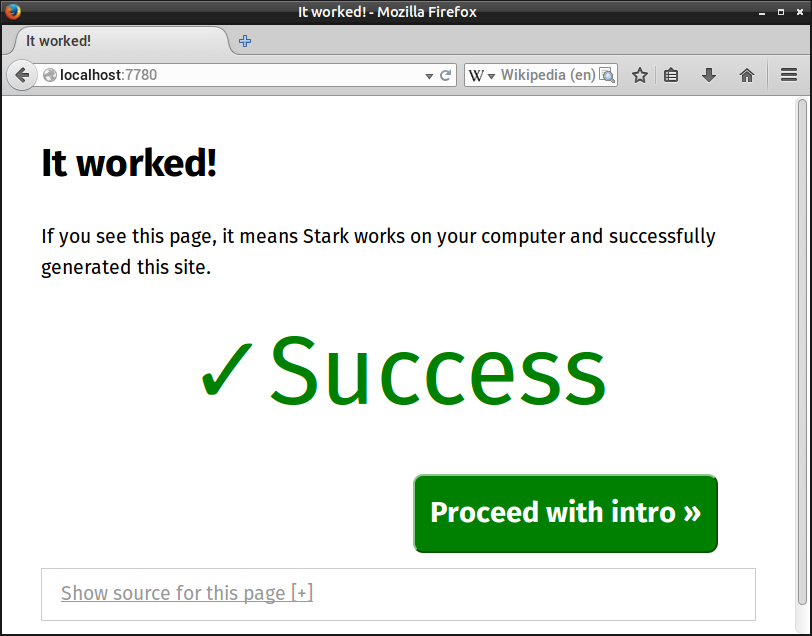

A straightforward way to build
single-page apps and static websites
Expressive
Yaml, Jade, Stylus used by default. You can even use LiveScript if you want.
Simple
Everything is a multi-part component: pages, widgets, themes, libraries, configuration. It simply works.
Plugged-in
Stark strives to reuse what exists. React and Bower components work today. Expect more in the future.
Quick Start
Run this in your terminal:
~$sudo npm install -g stark~$stark new yoursite~$cd yoursite/~/yoursite$stark watch-server
Then open the printed link in your browser (usually it's http://localhost:7780). You should see a page like this:

Reference
Directories
Now lets look through the contents of your site directory:
| build | Output directory. Stark will create it if it is missing. |
| bower_components | Bower components. Optional. Used when finding components. |
| lib | Local components. Optional. Used when finding components. |
| node_modules | Node components. Optional. Used when finding components. |
| pages | Pages. Optional. |
| static | Static files. Optional. |
build/
You will find the compiled pages, scripts, styles and other files here. Directory contents should look like this:
| index.html | Home page created from index.mpc |
| static/ | Files copied over from static/ |
| static/ style.css | CSS style built from requirements of index.mpc |
| static/ script.js | JavaScript modules build from requirements of index.mpc |
| somepage/ index.html | Page created from pages/somepage.mpc |
Component directories: lib, bower_components, node_modules
These directories are added to include path. Stark will search for requirements in these directories.
You should put your own templates, widgets, JS modules into lib. You should try installing third party libraries with bower and npm when available.
pages/
Directory for your page components. pages/yourpage.mpc will be used to generate build/yourpage/index.html .
static/
The contents of this directory are recursively copied to build/static/.
Files
| config.mpc | Site-wide configuration. Optional. |
| index.mpc | Home page. Starting point. Required. |
| build/index.html | Generated HTML. |
| build/static/script.js | Generated JavaScript. |
| build/static/style.css | Generated CSS. |
config.mpc
The data from the yaml part of this file will be available as site.config value in templates.
Alternatively you can rename the file to config.yaml. (Don't forget to remove the MPC part headers).
index.mpc
This is the main page of the site and the starting point for CSS and JavaScript generation:
- Stark creates build/index.html from template parts of this page.
- Stark creates build/static/script.js and build/static/style.css from the requirements of this page.
build/index.html
Stark will compile this HTML file from the template parts of index.mpc.
build/static/script.js
Stark will compile JavaScript from index.mpc dependencies into this file.
build/static/style.css
Stark will compile CSS from index.mpc dependencies into this file.
Component Parts
Stark pages and components are made of parts. Some of them are processed before including in the final output, others are copied verbatim.
| requirements | List of required components. Format docs. |
| exports | List of exported values from js part. Format docs. |
| yaml / yml | Data available inside of template and js parts. About YAML. |
| jade | Jade template part. Takes priority over all template types. Format docs. |
| jst | JavaScript template part. Takes priority over other template types (except Jade). Format docs. |
| js | JavaScript that gets executed on the browser side. |
| styl / stylus | Stylus CSS format. |
| css | Plain CSS. Will not be processed by Stylus. |
| md / markdown | Alternate format for page content. |
| html / php | Alternate format for page content. Not processed. |
Other
Contributing
Please use Github Issues for bug reporting and feature requests.
Please keep your pull requests small and make sure they merge easily with the master branch before submitting.
Please send any other feedback to my email: emilis.d@gmail.com. It is most welcome.